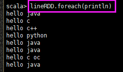

Spark入门
参考：马士兵 - Spark入门
制作人：小邹[yw_forgit@163.com]
本教程不需要“Hadoop入门”教程的基础，但是最好先看它，而且本教程不会用到Hadoop的集群，只运行在单机上，我的电脑终于可以重启一下了。
1、简单概念
Spark是内存计算引擎，而MapReduce每次计算的中间结果都是放硬盘的，所以，Spark比MapReduce快。
spark使用scala开发，但是会编译成class文件，放到JVM运行，而spark支持Java、Scala、Python语言开发接口，使用Java来开发接口比较少，Scala、Python比较多。
Spark也可以在本地执行，也可以运行在Hadoop集群，本教程在单机运行。
大数据开发，核心在Spark。
2、安装配置Spark
准备虚拟机
复制一台虚拟机出来（这四台虚拟机是在“Hadoop入门”的时候创建的），名字随便，我这里是client
编辑网卡，修改ip为192.168.56.200
重启网络
ifconfig一下就能看到ip，然后用Xshell连接上来
修改主机名
编辑hosts文件
ping一下
然后用Xshell连接
下载安装包
Spark读Hadoop文件都是要读Hadoop的库的，所以Spark2.x是对应Hadoop2.7或者更高版本的，版本要对应。
安装
上传到虚拟机
解压tgz
改一下名字
这个就是Spark的目录
运行模式
local模式 // 本地运行
standalone模式 // 这是Spark自己实现了Yarn的内容
// 这两个本质是一个东西，只是yarn模式用Yarn作为资源分配，而mesos用mesos作为资源分配
yarn模式
mesos模式
核心概念RDD
通过spark-shell认识RDD
本地运行模式
使用spark-submit提交job
执行这条命令
具体内容是
|
bin/spark-submit
--class org.apache.spark.examples.SparkPi
examples/jars/spark-examples_2.11-2.2.3.jar 10000 |
命令的解释：
bin/spark-submit // 提交一个任务
--class // 执行一个类的操作
org.apache.spark.examples.SparkPi // 就是执行这个类，这是计算圆周率的例子程序类
examples/jars/spark-examples_2.11-2.2.3.jar // 那个类在这个jar包里面
10000 // 参数，这个数越大，执行时间越长，结果也就越精确
然后赶紧去访问 http://192.168.56.200:4040/ ，就会打开下图。这是给Spark提交一个任务，Spark计算会提供一个界面给我们观察计算的过程。
执行完毕
任务完成之后就没有了，如下图，界面就无法打开。提交完任务之后，spark就会起一个Spark服务，给我们观察

使用spark-shell进行交互式提交
准备一个txt文件，这是之前的用过的
进入交互式，默认进入local模式
重新开一个连接窗口可以看到SparkSubmit在后台运行

spark-shell命令的过程
RDD就Resilient Distributed Datasets，就是弹性分布数据集，RDD就是一条条的数据的集合。这数据集是分布式的，可以放到很多的机器上，实际上只是内存汇总的一个概念，只是映射到了大数据上，并不是在内存中真真正正的有。
这是Scala语法，默认变量是sc。spark支持Java、Scala、Python三种语言的接口，后两种最多。
sc.textFile("/root/input.txt")回车之后就会返回的数据的类型，这里的数据类型是RDD，RDD里面是一条条的数据的类型是String。/root/input.txt就是之前准备好的测试数据。
读取的内容存入变量，这语法类似于Python。
拿出每条数据给println去打印出来。这里就可以看出textFile的意思就是把文件内容一行行扔到RDD里面。

collect就是把数据装入一个数组里面
对比一下map方法与flatMap方法的结果
打印一下flatMap之后的结果

组装key、value对
结合结果来理解，reduceByKey就是迭代每个k、v对，根据key来缩减，key相同的一对，把他们的value值分别叫x、y，然后相加，相加之后的结果又是一对新的k、v，继续与下一个key相同的相加。
排一下序
就这么把以前的WordCount程序完成了，用Java写代码也可以，用Hive的SQL也可以，现在用Spark的scala编程也能搞定，搞大数据建议学Python。如果只是用Scala做开发，才建议学scala，当然多学一点也没有害处。
其实上面的操作只需要用一句话。下划线表示默认的形参，结果保存到一个目录。
看下结果文件
使用local模式访问hdfs数据
这是从远程拉取到本地执行，这我没有执行过，复制老马的。
|
1、start-dfs.sh 2、spark-shell执行：sc.textFile("hdfs://192.168.56.100:9000/input.txt").flatMap(_.split(" ")).map((_,1)).reduceByKey(_+_).sortByKey().collect （可以把ip换成master，修改/etc/hosts） 3、sc.textFile("hdfs://192.168.56.100:9000/input.txt").flatMap(_.split(" ")).map((_,1)).reduceByKey(_+_).sortByKey().saveAsTextFile("hdfs://192.168.56.100:9000/output1") |
spark standalone模式
同样是直接复制的
|
1、在master和所有slave上解压spark 2、修改master上conf/slaves文件，加入slave 3、修改conf/spark-env.sh，export
SPARK_MASTER_HOST=master 4、复制spark-env.sh到每一台slave 5、cd /usr/local/spark 6、./sbin/start-all.sh 7、在c上执行：./bin/spark-shell --master spark://192.168.56.100:7077 (也可以使用配置文件) 8、观察http://master:8080 |
spark on yarn模式
无